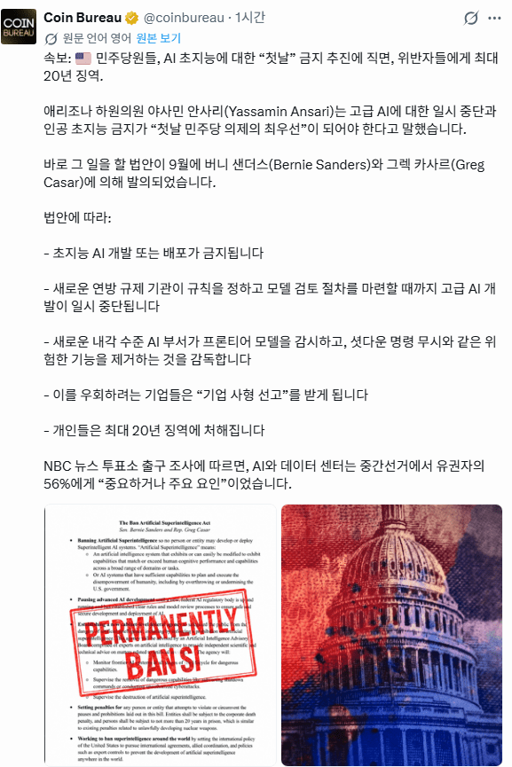
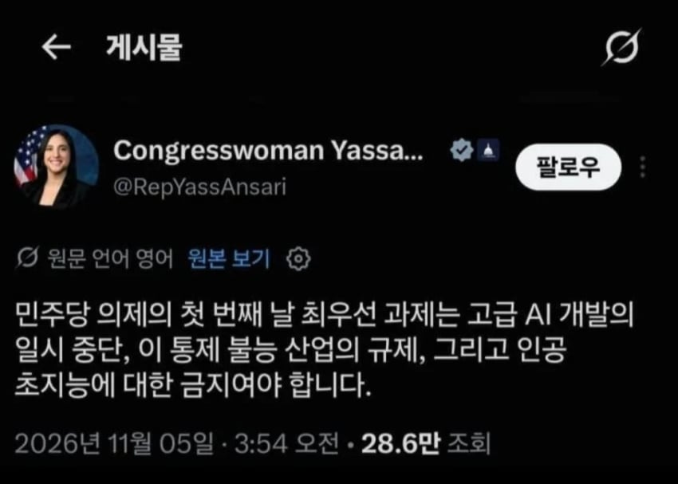
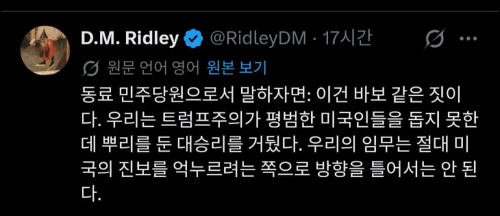
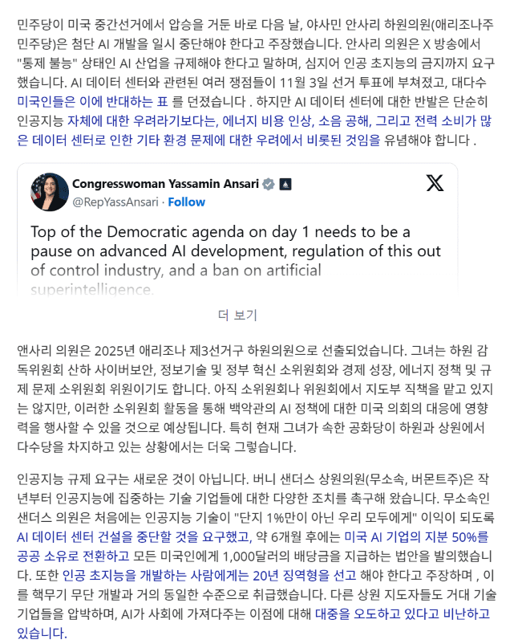

시발 ㅋㅋㅋㅋ
- dc official App


트럼프 끌어내리는데 급급해서
이새끼들이 좆병신인걸 검토안함 ㅋㅋㅋㅋㅋㅋㅋㅋㅋㅋㅋ
뽑은거 후회 존나하는중 ㅋㅋㅋㅋㅋ
반도체는 이제 끝났다고 보면 됨
- 앞으로 AI 개발하면 징역 20년이라고 함 ㅋㅋㅋㅋㅋㅋ

AI 기업들은 공공재행 ㅋㅋㅋㅋㅋㅋㅋ
공산주의국가노
※ 압둘 엘사예드 : 이번에 당선된 미시간 연방 상원의원, 트럼프와의 설전으로 유명해짐

- 소위 "AI 패권 경쟁" 이란건 미국인 전체의 이득이라기 보단 빅테크 과두정들의 과장되고 허황된 수사에 가까움
- 국가 안보나 글로벌 AI 패권이라는 명분을 갖다붙이지만 정작 중요한 인플레이션, 실업, 의료보험 같은 진짜 문제들을 가리는 눈속임임
- 미국이 AI 연구 속도를 늦춘다고 중국이 패권을 잡는다는것도 사실이 아님.
- 중국인들은 그저 미국모델을 흉내내고 모방하고 있을 뿐이며, 보트(미국)가 수상스키(중국)를 끌고 다니면서 쟤넨 왜 저렇게 빨리 따라오지? 라고 하는꼴임.
- AI 신모델 일시중단, 데이터센터 건설 일시중단, 초지능과 재귀개선등도 중지해야 하며, AI기업 이사회를 시민들이 민주적으로 선출한 인사들로 채워야함